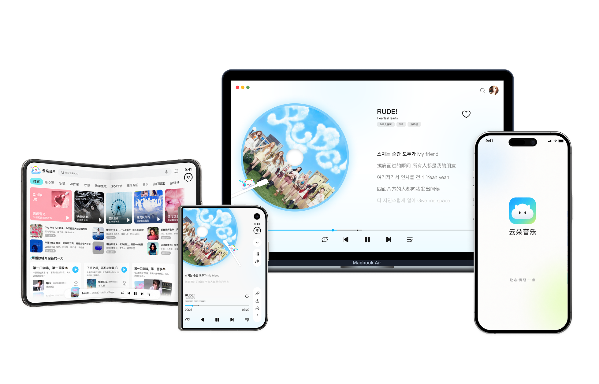
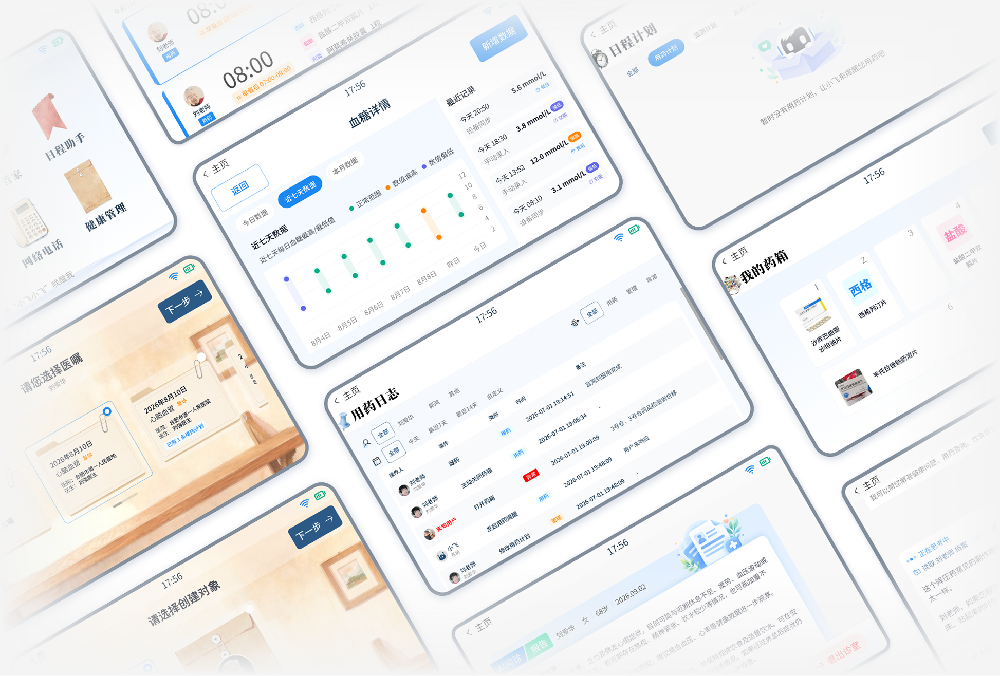
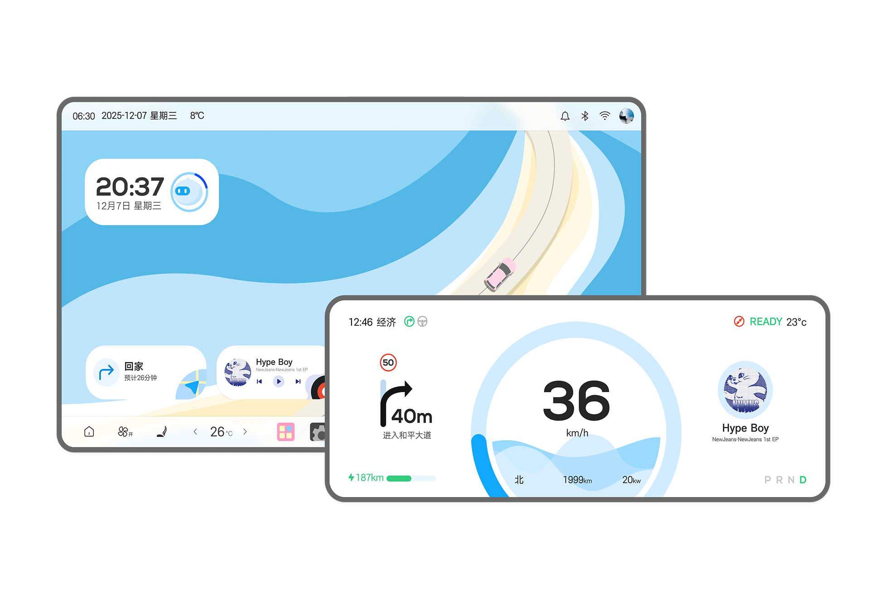
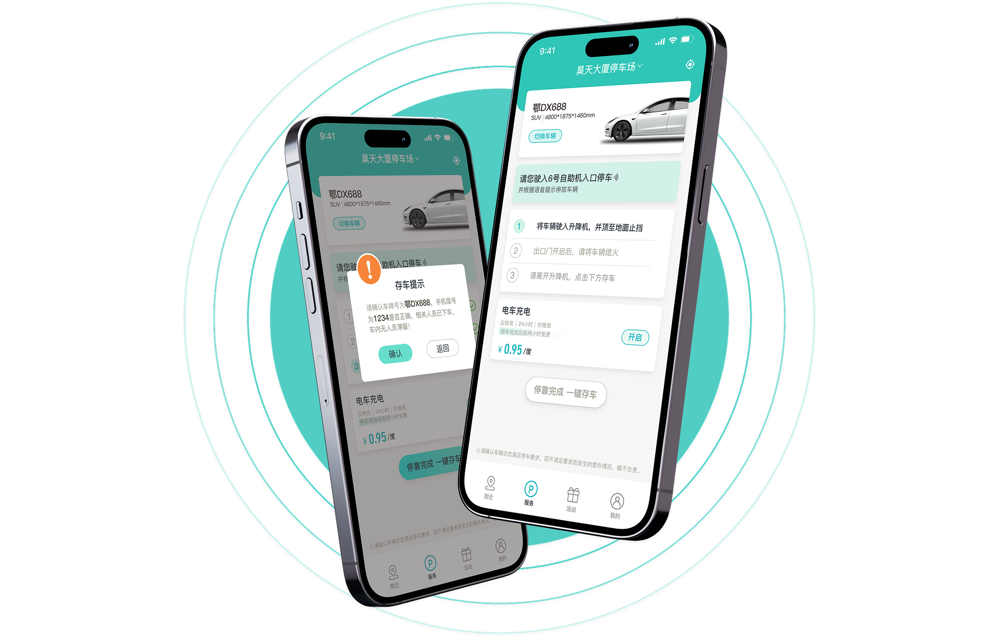
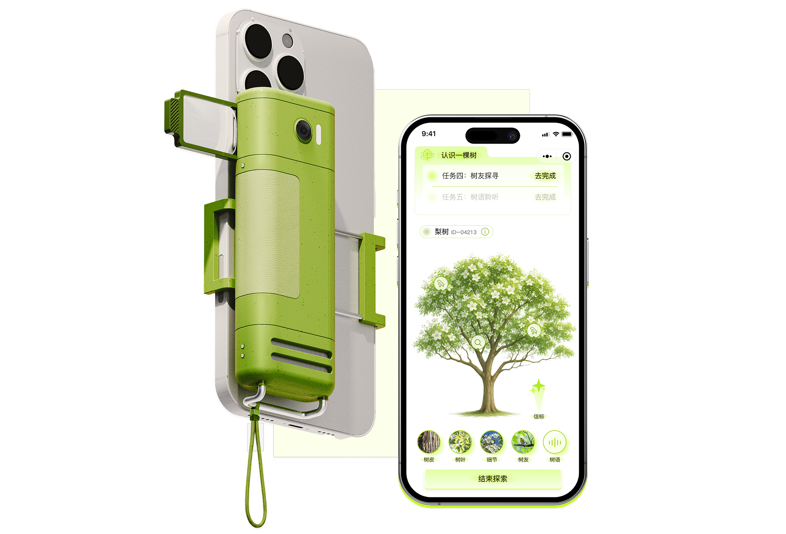
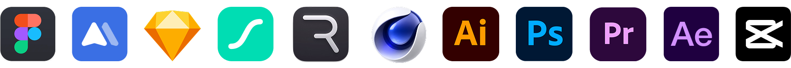

PROJECT 01 · MUSIC EXPERIENCE
云朵音乐 CloudTune
面向年轻用户的智能音乐服务平台，聚焦个性化听歌与情绪场景需求，融合智能推荐、自然交互与音乐创作，为用户提供更便捷、更贴合个人需求的音乐体验。
查看设计案例细节 / View Case Study ↗
一名喜欢探索新鲜事物的交互体验设计师，拥有交互与体验设计背景，关注 AI 与新兴交互；擅长从用户需求出发梳理体验与界面，探索人与产品之间更自然、直观的连接。
面向年轻用户的智能音乐服务平台，聚焦个性化听歌与情绪场景需求，融合智能推荐、自然交互与音乐创作，为用户提供更便捷、更贴合个人需求的音乐体验。
查看设计案例细节 / View Case Study ↗
围绕家庭生活与健康管理场景，参与机器人软件端的软硬件协同体验设计，探索语音、头部表情与机身大屏之间的多模态交互，让服务反馈更加自然、清晰且有亲和力。
查看设计案例细节 / View Case Study ↗
基于比亚迪智能座舱 UI 设计大赛，以“旅途即体验”为核心，将海面与道路的流动意象融入车载 HMI，通过浅色视觉、卡片化信息与极简操作，营造清晰从容的驾乘体验，带来更自然、有温度的陪伴。
查看设计案例细节 / View Case Study ↗
围绕 AGV 自动停车场的服务流程，梳理用户从查找停车场、预约车位到存车、取车的完整体验，针对操作引导、车辆状态与取车信息等环节，设计清晰便捷的一站式停车服务。
查看设计案例细节 / View Case Study ↗
以树木为载体，构建连接自然场景与数字体验的探索服务。通过实体探索工具与小程序联动，支持树木观察、信息记录、探索任务与内容分享，让用户在探索过程中重新建立与自然的连接。
查看设计案例细节 / View Case Study ↗
Hello，我是邢甲一。一名喜欢探索新鲜事物的交互体验设计师，目前就读于江南大学交互与体验设计专业。我关注 AI 与新兴交互，也喜欢从真实的用户需求出发，把复杂的功能梳理成自然、清晰的体验。

我目前就读于江南大学交互与体验设计专业，正在寻找 UI/UX 或交互设计相关的实习机会，欢迎联系。